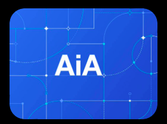

A systematic process of inquiry and investigation aimed at discovering, interpreting, and revising facts, theories, and applications. Involves gathering data, analysing information, and synthesising findings to advance knowledge and understanding in various fields.
Dedicated to advancing the understanding and treatment of thyroid cancer. Through collaborative efforts with medical experts, and funding innovative projects, SaadiCorp aims to improve early detection, develop more effective therapies, and ultimately enhance the quality of life for patients affected by thyroid cancer.
Naveed Khalid, Chairman, SaadiCorp
SaadiCorp has sponsored clinical trials, supported research fellowships, and contributed to the development of novel therapies aimed at improving patient outcomes. The Company has invested over 5 million rupees in thyroid cancer research, funded 10 clinical trials, and supported 15 research fellowships.
We are working closely with Cancer Care Hospital & Research Centre specifically to work on the timely identification and treatment of thyroid cancer in Pakistan. Around 100,000 cases of thyroid cancer are reported every year in Pakistan and a mere 47,000 of the 100,000 get properly treated for it. This means that more than half the cases of thyroid cancer in Pakistan don’t even get properly diagnosed and treated.
Research at SaadiCorp is working on reducing this number by researching on new ways for identification and treatment of thyroid cancer and by providing funding for clinical trials of new drugs and supporting other researches as well.
If you or someone you know is going through the treatment of thyroid cancer, or has been diagnosed for it, we would love to help any patient of thyroid cancer by providing funds for the treatment and/or any other services or facilities required.
Additionally, a thyroid cancer patient can also help us conduct research that would help in early detection and more effective therapy methods for others.
Adaptive Investment Advisor (AIA) is an advanced AI-driven platform designed to revolutionize the way individuals and institutions manage their investments. It leverages machine learning, natural language processing, and real-time data analytics to provide personalized investment advice, optimize portfolios, and predict market trends with high accuracy.
The Adaptive Investment Advisor represents a significant advancement in the field of investment management, offering a powerful tool for both individual and institutional investors to navigate the complexities of the financial markets with greater confidence and precision.